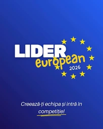
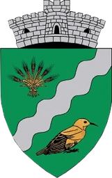
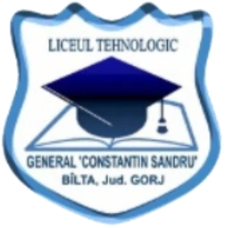

Recomandat
Cinematic Nocturn
Relief montan sculptat 3D, iluminare nocturnă caldă și puncte de interes contrastante.
Patrimoniu viu, natură și memorie comunitară



O hartă 3D interactivă a locurilor, tradițiilor, oamenilor și poveștilor care dau identitate comunei Runcu, județul Gorj — de la Cheile Sohodolului până pe crestele Vâlcanului.